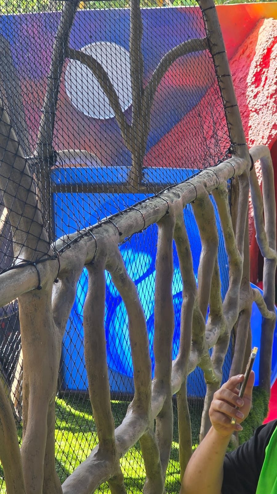

Un gato en un balcón o una ventana abierta es una caída esperando a pasar. La solución más sencilla y discreta es cerrar el espacio con una malla para gatos: deja pasar el aire y la luz, y mantiene al gato adentro. Lo importante es elegir bien la abertura y fijarla de forma correcta.
La abertura correcta: 1 pulgada
Para gatos y balcones recomendamos la red de 1 pulgada. Hay dos razones:
- El gato no intenta pasar. Con una abertura más grande, el gato mete la cabeza o el cuerpo para intentar salir y puede quedar atorado entre la malla. Con 1 pulgada ni lo intenta.
- Es la más resistente. Entre más cerrada la malla, más cordón tiene por metro y mejor aguanta que el gato se cuelgue o la arañe.
Si quieres entender las diferencias entre aberturas, revisa redes de 1, 2, 3 y 4 pulgadas.
Red de seguridad para ventanas y balcones
La misma red sirve como malla de protección para ventanas y como protección para balcones, aunque no tengas gatos: cierra el espacio sin tapar la vista ni la ventilación.
Con qué fijarla: flejes o cinchos, nunca cable acerado
La malla se sujeta al barandal, al marco de la ventana o a la estructura del balcón con flejes o cinchos, a distancias cortas para que no queden huecos por donde el gato pueda empujar.
No recomendamos cable acerado. Con el movimiento y el viento, el cable roza la red y la fricción termina cortándola. Una red cortada en un balcón es justo el problema que querías evitar.
¿Quién la instala?
Por el tamaño del trabajo, para balcones y ventanas recomendamos que la instale alguien de tu confianza en tu ciudad. Nosotros te explicamos cómo se instala, te asesoramos durante el proceso y te compartimos material de apoyo para que la instalación sea más fácil.
Cómo se cotiza
La malla se hace a la medida y se cobra por metro cuadrado. Para cotizarla mándanos:
- El ancho y el alto de cada espacio que quieres cerrar.
- Fotos del balcón o la ventana.
- La ciudad de entrega.
Si además necesitas cerrar un área contra palomas, revisa nuestra guía de malla antipájaros.
Preguntas frecuentes
¿Qué abertura de malla sirve para gatos?
La de 1 pulgada. Con una abertura más grande el gato intenta pasar y puede quedar atorado; la de 1 pulgada además es la más resistente.
¿Puedo fijar la malla con cable de acero?
No lo recomendamos. Con el movimiento, la fricción del cable acerado termina cortando la red. Es mejor fijarla con flejes o cinchos.
¿Ustedes instalan la malla para balcones?
Para balcones y ventanas recomendamos que la instale alguien de tu confianza en tu ciudad. Nosotros te explicamos cómo, te asesoramos y te compartimos material de apoyo.
¿Cómo se cobra la malla para gatos?
Se hace a la medida y se cobra por metro cuadrado. Mándanos el ancho y el alto de cada espacio, fotos y tu ciudad.